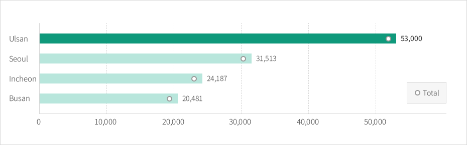

Labor&Employment Environment
- Home
- Why Ulsan
- Investment Environment
- Labor&Employment Environment
High Labor Productivity
Ulsan has higher value-added per person than any other city or province in Korea. While Ulsan’s value-added per capita is US$ 56,170, Chungnam’s value-added per capital is US$ 41,793 and other cities fall far behind these figures.
Labor Productivity Comparison
Unit: USD, Labor productivity: GDP/Economically active population



Stable Employment Environment
Well-known for its business-friendly environment, Ulsan has actively promoted the "Business friendly Campaign" since 2005. Both labor and management have endeavored to improve regional competitive power by establishing a harmonious labor-management culture.